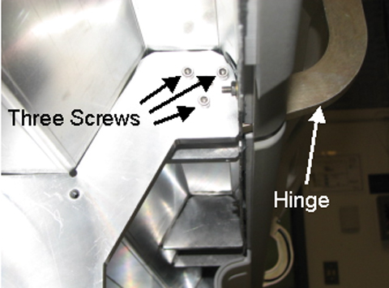
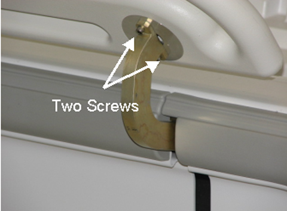

Operating Documentation
Direction 5670000, Rev# 1
Module Version 3.0, Version Date 11/2/09
Operating Documentation |
Undock the Patient Table and remove table from the scan room to perform work.
Move the arm board on the table into the up position by squeezing the lever on the underside and lifting up. (See Illustration 1.)
Remove the upper side covers nearest the hinge to be removed. (See Touch and Go Strip and Side Bumper Replacement.)
Using the short tip 4mm wrench (to access inner screw), remove two screws attaching the hinge to the arm board. (See Illustration 2.)
Using the short tip 4mm wrench (to access inner screw), remove three screws attaching the hinge to the table. (See Illustration 3.)
Using a flathead screwdriver, remove the two screws covering the lever mechanism under the arm board. (See Illustration 4.)
Loosen the setscrew securing the cable to the lever mechanism and remove the cable to allow the hinge mechanism to be removed completely. (See Illustration 5.)
Insert the new assembly through the arm board and thread the cable into the sheath and wrap as shown making sure that it is tight enough to actuate.
Reattach the arm board hinge to the table with three lower hinge screws. (See Illustration 6.)
Illustration 6: Three Lower Hinge Screws

After applying a small amount of Loctite 242 to each upper hinge screw, reattach the arm board hinge to the attaching the arm board with the two upper hinge screws. (See Illustration 7.)
Illustration 7: Two Upper Hinge Screws

Check the functionality of the lever and make sure that the arm board can be moved up and down.
Install the upper side covers nearest the hinge. (See Touch and Go Strip and Side Bumper Replacement.)
Return table to scan room.